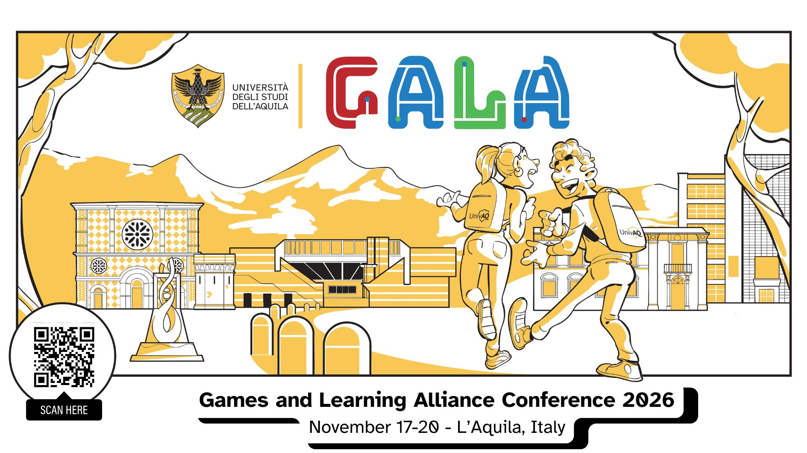

17–20 novembre 2026
HEPscape!: Designing a Scalable Educational Escape Room for Particle Physics
Il talk presenta la progettazione di HEPscape! come escape room educativa scalabile, per esplorare la fisica delle particelle attraverso il gioco.
Vai al sito della conferenza